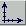

The questions are organized into the follow categories:
UNIX getting XEphem up and running well on your UNIX (or Linux, etc) system. Mac ditto for MacOS X Usage tips, techniques and issues applicable to all platforms. Bugs Known bugs in the current release. Can't find your question here? Try the Forum (off site) or send an email to xephem@ClearSkyInstitute.com
UNIX Installation Questions
- I built from the downloaded source code and I am having problems with XEphem GUI operation, such as windows not closing properly using the title bar control. Any suggestions?
- When I try to use Help I get the message "Error: No running window found". I have Help » Configure set to mozilla. What's going on?
Try using firefox instead as follows:
firefox --new-tab '%s'(contributed by Nick Warne)- When I open Sky View I get the message "can not find classicfigs.csf" and XEphem dies.
Or when I start XEphem I know there is supposed to be a logo at the top but it is missing.
Or I can only find a few database files after I installed the commerical version.
What's going on??Sounds like there is a problem with the way XEphem support files are configured. First some background. XEphem looks for support files in two places in order, first XEphem.PrivateDir then XEphem.ShareDir. These terms are X Window System resource names that refer to a per-user private directory and a system-wide shared directory, respectively. By default these are
$HOME/.xephemand.(where "$HOME" refers to the directory you are in when you first log into your system and "dot" is UNIX parlance for the current directory), respectively.You can set a different value for XEphem.PrivateDir in the file named
$HOME/.xephemrc. For example, to use the directory/home/myhome/.myxephemfor your private files add a line to this file as follows:XEphem.PrivateDir: /home/mylogin/.myxephemYou can set a different value for XEphem.ShareDir using the standard X Window System resource file mechanism. The default location for the global version of this file for XEphem on Linux and MacOS X systems is
/etc/XEphem, and on other UNIX systems it is often/usr/lib/X11/app-defaults/XEphem. For example, to use the directory/usr/local/xephemfor your shared files add a line as follows:XEphem.ShareDir: /usr/local/xephemNow, to get back to the opening questions. The missing files in question are located in the directories namedauxilorcatalogsunder XEphem.ShareDir. So if these directories are not set up correctly, such as from a previous installation of XEphem that was installed differently or when trying to mix the free and commercial versions of XEphem, they will not be found. With this explanation, you now know how to check that your private and shared directories are set up as desired and then things should work correctly.- I am running Linux and I get errors about missing motif or X11 stuff. What can I do?
In short, you need to install more packages. For example, on Ubuntu 12.10, type the following command to install them:
sudo apt-get install libmotif-dev libx11-dev libxmu-dev libxp-dev libxt-dev x11proto-print-devIt's easier on OpenSUSE, because it brings in everything else for you as dependencies of openmotif:$ sudo zypper install openmotif-develOn Fedora 8, it is also just as simple:$ sudo yum install openmotif-develOn Ubuntu 64 bit, use the package manager to install libmotif4. To install disk2 and disk3, install tcsh.On Ubuntu 16.04, try
apt-get install libmotif-dev libxmu-devOn Ubuntu and Debian you may also need to add the PPA for libXp. Further information is available here.
If these packages still do not resolve all references, you can try using your package management tools to search for the package that defines a missing file. For example, on Ubuntu you can get apt-file as follows:
sudo apt-get install apt-file sudo apt-file updateThen you can search for missing file x usingapt-file search xComparable packages and package management tools are provided on other linux flavors.
- Can I use Google Chrome as the help system browser?
Yes. Open Help » Configure help then make and select an entry that contains the following:
google-chrome %sTest it. If it works, make it the default using Preferences » Save » Save now.
MacOS X Installation Questions
- When I try to run the commercial version on Yosemite, I get an error about some library not being loaded. Any ideas?
Yes. This is because Yosemite moved the location of the X Windows libraries. The cure is very simple. Open a Terminal and type the following command and then XEphem will run fine:
sudo ln -s /opt/X11 /usr- When I try to build the free version on Yosemite using the instructions in the INSTALL file, I get errors about not finding X11 files. Any ideas?
Yes. The change above will also cure this issue.
- I am having problems installing on Leopard and Lion. Any ideas?
Follow these steps to install the CD images on Leopard (10.5), Snow Leopard (10.6) and Lion (10.7):
Step Do this Comments 1 Install Disk 1 package If it says it was Successful, proceed to Step 2. If it almost completes but then says it failed go to Step 1b. 1b Start Terminal and type exactly the following at the prompt all on one line: sudo sh -c "echo XEphem.ShareDir:/usr/local/xephem > /etc/XEphem"This creates a file telling XEphem where its supporting files are installed. This must be done as root which the command "sudo" does temporarily -- admin is not enough (this is why the install fails). Proceed with Step 2. 2 Install Disk 2 package It will say it completed successfully, which it did. 3 Install Disk 3 package It will say it completed successfully, which it did but along the way it wiped out Disk 2. 4 Install Disk 2 package (yes, again!) It will say it completed successfully, which it did and it also did not effect Disk 3. - I am having problems installing on Mountain Lion. Any ideas?
Follow these steps to install the CD images on Mountain Lion (10.8):
Step Do this Comments 1 Install Disk 1 package If it says it was Successful, proceed to Step 2. If it almost completes but then says it failed go to Step 1b. 1b Start Terminal and type exactly the following at the prompt all on one line: sudo sh -c "echo XEphem.ShareDir:/usr/local/xephem > /etc/XEphem"This creates a file telling XEphem where its supporting files are installed. This must be done as root which the command "sudo" does temporarily -- admin is not enough (this is why the install fails). Proceed with Step 2. 2 Install Disk 2 package It will say it completed successfully, which it did. 3 Start a Terminal session and type exactly (or better yet copy/paste): sudo mv /usr/local/xephem/catalogs/GSC2201/*.xe3 /tmpThis command moves the database files installed from Disk2 to a temporary location so the next step does not trash them. 4 Install Disk 3 package It will say it completed successfully, which it did but if Disk2 files had still been in place it would have wiped them out. 5 Again in Terminal type exactly: sudo mv /tmp/*.xe3 /usr/local/xephem/catalogs/GSC2201This command moves the database files that came from Disk2 back where they should go. - How can I get my trackpad or mouse to emulate a three-button mouse?
Start XEphem, then click on the big X app in the dock. Open X11 -> Preferences. In the Input tab, check on "Emulate three button mouse". Now Option-click is like the middle button and Command-click is like the right button.
- When I build from source I get errors like 'make: Command not found' or about missing X11 files. Am I missing something?
Yes. You are missing XCode or X11. You can get XCode free from Apple's web site.
Note that as of 10.8 (Mountain Lion), installing XCode does not install the command line development tools. To do that, just start XCode, open Preferences/Components and install the Command Line Tools. Also as of Mountain Lion, Apple no longer ships X11. You now get it from http://xquartz.macosforge.org.
Now that you have command line tools such as cc and make and X11 installed, read the INSTALL file inside the XEphem tarball for the proper way to invoke the make command when building on OS X.
- Can I use my default browser as the help system browser?
Yes. To use your default browser for XEphem help on Mac OS X, enter and select the following entry in Help » Configure help (contributed by Gavin Eadie)
osascript -e 'open location "%s"'- I have created a file (such as a print, plot, list, etc) and would like to see it outside XEphem but I can not find it. Where are they stored on OS X?
They are stored wherever your XEphem.PrivateDir resource is set. By default, on OS X this is ~/Library/XEphem. Note you can see the Library folder within Finder by clicking on the Go menu while holding down the Option key.
Usage Questions (applicable to all platforms)
- What's wrong with Help?
It's probably not configured correctly. XEphem uses your Internet browser to display help, so it has to know how to talk to it.
Off the Main window, open Help » Configure help. Look through the choices for your browser. If you find it, just click the button on the left and test with any XEphem Help entry. Note that some of these commands assume the browser is already open and do not work otherwise, so if the line for your browser is listed and activated but Help still does not work, try opening your browser first and trying again.
If Help still does not work, you'll have to figure out the command to issue to your browser to open a local file. The table entry is passed to a shell so you can do whatever you need to, but don't forget to quote sensitive characters. Enter your new command in any line of the table, using %s where the local file name should go, then click to activate the line and test again.
After you have it working, be sure to save the new configuration using Preferences » Save or you'll have to do it again each time you start XEphem.
We researched several browsers but there are certainly more we didn't try, and there might well be better ways to talk to them than we found. Please send your suggested commands to us at xephem@clearskyinstitute.com and we will post here for others to find.
- Why does the Sky View Grid toolbar button act so weird?
Perhaps the logic is only obvious to me! The Sky View uses two coordinate systems: RA/Dec and Alt/Az. The coordinate system for Display orientation is independent of that for the Grid. The rules for the control buttons are as follows:
In this way 6 combinations of coordinate systems (2 for Display [RA/Dec + Alt/Az] X 3 for Grid [RA/Dec + Alt/Az + off]) can be controlled with just 2 buttons (although one can not switch among them in an arbitrary order).
 toggles Display coordinate system between RA/Dec and Alt/Az, but never changes the coordinate system for the Grid. turns the Grid off and on, and when it turns it on always sets the Grid coordinate system to match that currently used for Display.
- Why do Sky View grid lines have a small bump to them sometimes?
Because of atmospheric refraction. Refraction raises everything to a greater extent as you look lower and lower, increasing rapidly near the end to about 32' at horizontal. This effect is evident when displaying in one (ideal) coordinate system and overlaying (refracted) grid lines in the opposite coordinate system.
Suppose you are pointing near the horizon, are using Alt-Az display mode and are displaying RA-Dec grid lines. When projected onto the celestial sphere as seen from your location under all that air, this has the effect of curving the grid lines a little higher in the vicinity of the horizon than one would see without refraction. Indeed, because of refraction you actually see about 32' more than 90° down from the zenith -- bonus!
Demonstrate this to yourself by going to the Main window and setting an Air Pressure value of 0 to effectively eliminate refraction. You will see the grid lines straighten out, and objects that were visible slightly above the horizon will drop below and go out of site.
What happens below the horizon? This is a bit problematic. In accord with standard models, XEphem gradually reduces refraction so that at about 5° below the airless horizon the effect is gone and the grids return to their airless paths.
- What is the meaning of the red circles drawn on my sky chart at a certain point on the ecliptic?
The anti-solar point is marked with a small open circle. The edges of the umbral and penumbral Earth shadow are marked with larger open circles. If Preferences » Equatorial is set to Topocentric, the projection is at the current distance of the Moon and corrected for parallax; if set to Geocentric the projection is at infinity.
If the moon is within the small circle you have a total lunar-eclipse; try 2003-11-09 @ 01:00:00 UTC.
- May I use screen shots, Postscript files, listings or other stuff made using XEphem on my web site or publications?
Regarding web sites, yes you may provided the following bit of HTML is placed somewhere on each such page:
<a target="csiwin" href="http://www.ClearSkyInstitute.com/xephem/xephem.html">Created using <b>XEphem</b></a>It should look and work like this: Created using XEphem.
Regarding publications, the Postscript files generated by XEphem already contain sufficient boilerplate with regards to giving us due credit. If these files are used intact as generated by XEphem, no further credits are required.
What you may not do is cite isolated numbers that you pulled off XEphem in your publications. There are too many contextual circumstances surrounding astrometric quantities to make fair representation of all that XEphem considered in its computation of displayed values.
- Why do you use Motif? Will you ever change to something else?
I suspect XEphem will forever be written in Motif for the following reasons:
- First and foremost, I very deliberately make the decision to focus my time and energy on features and accuracy, not aesthetics because, frankly, it's the aspect of the project I enjoy the most. I still have a long list of features to add in the coming years; this effort, and my enjoyment, would be drastically diluted by a major effort to change the L&F.
- The effort to change widget sets would be large. Not only is it "just" a matter of changing widgets in roughly 100k lines of GUI code, but I make deep use of Motif-specific functionality (after all, I was involved in creating Motif in the 80s) that do not map well to other toolkits.
- I know the entire API of Motif (about 3000 functions) completely by heart and am very efficient using it. When adding a new window, I see right through the widgets straight into the science. I am *almost* this proficient with Qt and Java Swing but see #2 and #4.
- I must have no inherent artistic or aesthetic sense of my own because, really, Motif still looks fine to me. To my mind, all buttons look alike and drag-and-drop is silly. I have no personal appreciation whatsoever of why one would pick one toolkit over another. I lived through the great SunView/OpenLook/Motif GUI wars of the late 80s wondering all along what the fuss was about.
- I feel no compulsion to compete or otherwise compare XEphem with any other software. It is my own labor of love which I am happy to share, it is not my intention to make it "successful" by any external measure. I do hope you find XEphem useful, even if you find it ugly.
Known bugs